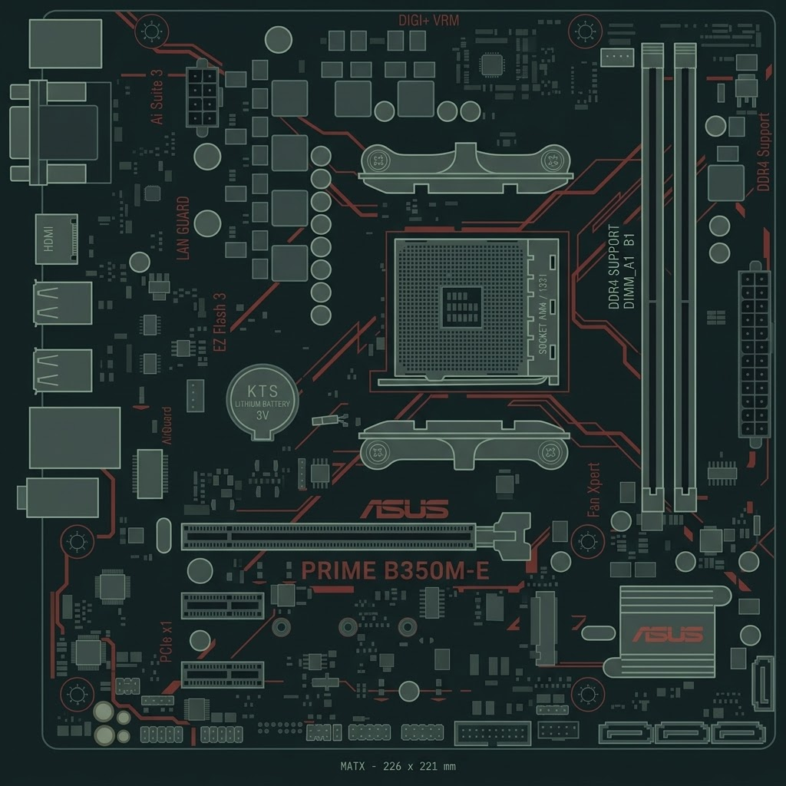

⎛ Manteniendo la frescura
Paso 2: Instalar el Disipador
El procesador genera mucho calor. El disipador (cooler) transfiere y expulsa esas altas temperaturas para evitar que la PC se apague.
1
Aplica pasta térmica
Si el disipador no la trae pre-aplicada, coloca una gota del tamaño de un guisante en el centro del procesador.
2
Alinea y atornilla en cruz
Arrastra el disipador sobre el procesador. Atornilla siempre en patrón de 'X' para distribuir la presión.
3
Conecta el cable al CPU_FAN
Busca los pines marcados como CPU_FAN en la placa madre para que el ventilador reciba energía.
🛡 No olvides el plástico
Asegúrate siempre de retirar el plástico protector transparente de la base del disipador antes de instalarlo.
Tu banco de trabajo
Placa madre B650 • AM5 • Micro-ATX

🔳
↓
Presión uniforme.
Arrastra el disipador desde el inventario. El sistema verificará que los anclajes coincidan con el socket de tu placa madre.